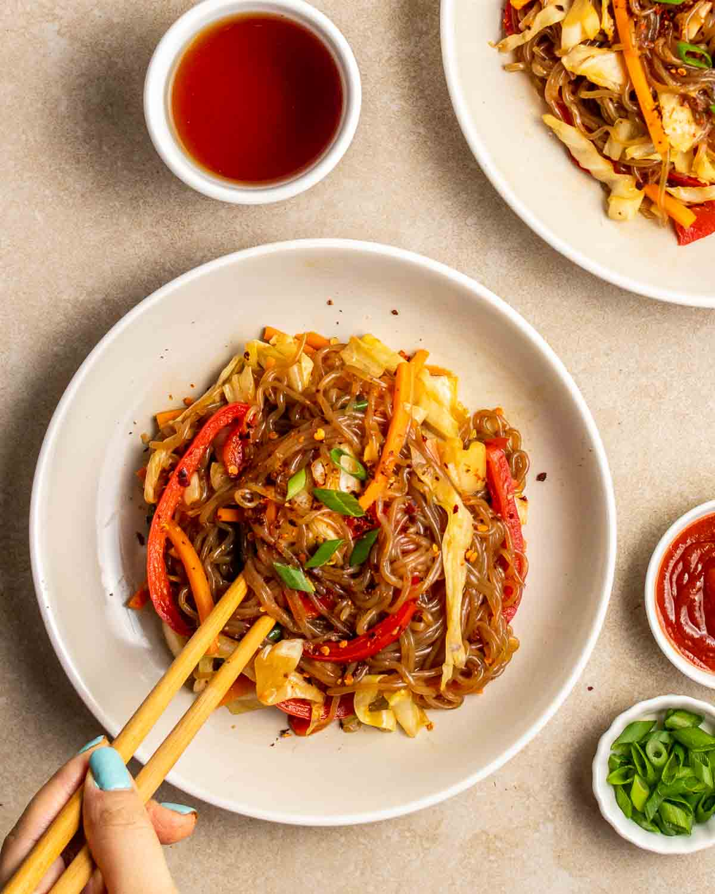

Shirataki Noodle Stir Fry
One of those rare dishes that takes more energy to digest than what it gives. Perfect for when you want to be a super greedy eater but already ate way too much for the day. Please never eat this on an empty stomach, that's not healthy.
Description
Quick, delicious, guilt-free meal. Easy cooking after preparations, everything into a single frying pan or wok!